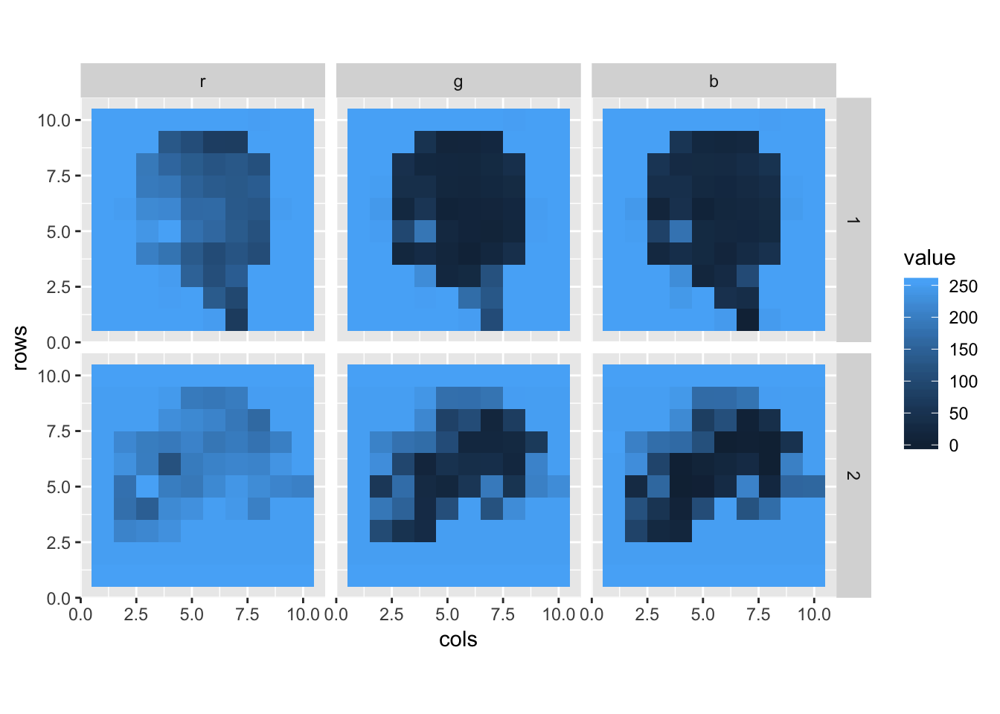

2 Tensortree Examples
2.1 Printing, Binding, Permuting
We’ve seen that the tensortree package can help illuminate tensors via custom printouts, for example in exploring the mnist dataset.
library(keras)
library(tensortree)
mnist <- dataset_mnist() # load mnist dataset
train_images <- mnist$train$x
train_labels <- mnist$train$yTo start with, we need to add some metadata to the tensors by converting them with as.tensortree() or tt() for short:
print(tt(train_images))## Rank 3 tensor, shape: (60000, 28, 28)
## # tensor [1, , ] shape: (28, 28)
## 0 0 0 0 0 0 ...
## 0 0 0 0 0 0 ...
## 0 0 0 0 0 0 ...
## 0 0 0 0 0 0 ...
## 0 0 0 0 0 0 ...
## 0 0 0 0 0 0 ...
## ... ... ... ... ... ... ...
## # tensor [2, , ] shape: (28, 28)
## 0 0 0 0 0 0 ...
## 0 0 0 0 0 0 ...
## 0 0 0 0 0 0 ...
## 0 0 0 0 0 0 ...
## 0 0 0 0 0 0 ...
## 0 0 0 0 0 0 ...
## ... ... ... ... ... ... ...
## ... truncating 59998 entries.Using %>% syntax, the above would be train_images %>% tt() %>% print(). The print() function can take a variety of parameters, for example the number of entries to show for the last 1, 2, or 3 ranks (default = 6). Let’s see 16 x 16 chunks of our images:
train_images %>% tt() %>% print(end_n = 16)## Rank 3 tensor, shape: (60000, 28, 28)
## # tensor [1, , ] shape: (28, 28)
## 0 0 0 0 0 0 0 0 0 0 0 0 0 0 0 0 ...
## 0 0 0 0 0 0 0 0 0 0 0 0 0 0 0 0 ...
## 0 0 0 0 0 0 0 0 0 0 0 0 0 0 0 0 ...
## 0 0 0 0 0 0 0 0 0 0 0 0 0 0 0 0 ...
## 0 0 0 0 0 0 0 0 0 0 0 0 0 0 0 0 ...
## 0 0 0 0 0 0 0 0 0 0 0 0 3 18 18 18 ...
## 0 0 0 0 0 0 0 0 30 36 94 154 170 253 253 253 ...
## 0 0 0 0 0 0 0 49 238 253 253 253 253 253 253 253 ...
## 0 0 0 0 0 0 0 18 219 253 253 253 253 253 198 182 ...
## 0 0 0 0 0 0 0 0 80 156 107 253 253 205 11 0 ...
## 0 0 0 0 0 0 0 0 0 14 1 154 253 90 0 0 ...
## 0 0 0 0 0 0 0 0 0 0 0 139 253 190 2 0 ...
## 0 0 0 0 0 0 0 0 0 0 0 11 190 253 70 0 ...
## 0 0 0 0 0 0 0 0 0 0 0 0 35 241 225 160 ...
## 0 0 0 0 0 0 0 0 0 0 0 0 0 81 240 253 ...
## 0 0 0 0 0 0 0 0 0 0 0 0 0 0 45 186 ...
## ... ... ... ... ... ... ... ... ... ... ... ... ... ... ... ... ...
## # tensor [2, , ] shape: (28, 28)
## 0 0 0 0 0 0 0 0 0 0 0 0 0 0 0 0 ...
## 0 0 0 0 0 0 0 0 0 0 0 0 0 0 0 0 ...
## 0 0 0 0 0 0 0 0 0 0 0 0 0 0 0 0 ...
## 0 0 0 0 0 0 0 0 0 0 0 0 0 0 0 0 ...
## 0 0 0 0 0 0 0 0 0 0 0 0 0 0 0 51 ...
## 0 0 0 0 0 0 0 0 0 0 0 0 0 0 48 238 ...
## 0 0 0 0 0 0 0 0 0 0 0 0 0 54 227 253 ...
## 0 0 0 0 0 0 0 0 0 0 0 10 60 224 252 253 ...
## 0 0 0 0 0 0 0 0 0 0 0 163 252 252 252 253 ...
## 0 0 0 0 0 0 0 0 0 0 51 238 253 253 190 114 ...
## 0 0 0 0 0 0 0 0 0 48 238 252 252 179 12 75 ...
## 0 0 0 0 0 0 0 0 38 165 253 233 208 84 0 0 ...
## 0 0 0 0 0 0 0 7 178 252 240 71 19 28 0 0 ...
## 0 0 0 0 0 0 0 57 252 252 63 0 0 0 0 0 ...
## 0 0 0 0 0 0 0 198 253 190 0 0 0 0 0 0 ...
## 0 0 0 0 0 0 76 246 252 112 0 0 0 0 0 0 ...
## ... ... ... ... ... ... ... ... ... ... ... ... ... ... ... ... ...
## ... truncating 59998 entries.And we can adjust how many entries to show per level above that, here to just show one:
train_images %>% tt() %>% print(end_n = 16, max_per_level = 1)## Rank 3 tensor, shape: (60000, 28, 28)
## # tensor [1, , ] shape: (28, 28)
## 0 0 0 0 0 0 0 0 0 0 0 0 0 0 0 0 ...
## 0 0 0 0 0 0 0 0 0 0 0 0 0 0 0 0 ...
## 0 0 0 0 0 0 0 0 0 0 0 0 0 0 0 0 ...
## 0 0 0 0 0 0 0 0 0 0 0 0 0 0 0 0 ...
## 0 0 0 0 0 0 0 0 0 0 0 0 0 0 0 0 ...
## 0 0 0 0 0 0 0 0 0 0 0 0 3 18 18 18 ...
## 0 0 0 0 0 0 0 0 30 36 94 154 170 253 253 253 ...
## 0 0 0 0 0 0 0 49 238 253 253 253 253 253 253 253 ...
## 0 0 0 0 0 0 0 18 219 253 253 253 253 253 198 182 ...
## 0 0 0 0 0 0 0 0 80 156 107 253 253 205 11 0 ...
## 0 0 0 0 0 0 0 0 0 14 1 154 253 90 0 0 ...
## 0 0 0 0 0 0 0 0 0 0 0 139 253 190 2 0 ...
## 0 0 0 0 0 0 0 0 0 0 0 11 190 253 70 0 ...
## 0 0 0 0 0 0 0 0 0 0 0 0 35 241 225 160 ...
## 0 0 0 0 0 0 0 0 0 0 0 0 0 81 240 253 ...
## 0 0 0 0 0 0 0 0 0 0 0 0 0 0 45 186 ...
## ... ... ... ... ... ... ... ... ... ... ... ... ... ... ... ... ...
## ... truncating 59999 entries.Let’s play with some other data by using keras’ image_load() and image_to_array() function to read two JPG files into tensors.


For ease of visualization we’re going to scale them to just 10x10, and for now we’ll format them with channels_first, resulting in rank-3 tensors with shape (3, 10, 10).
# read raw image data,
# convert to tensor with a 'channels-first' representation
# and convert to tt()
strawberry <- image_load("images/strawberry.jpg", target_size = c(10, 10)) %>%
image_to_array(data_format = "channels_first") %>%
tt()
apple <- image_load("images/apple.jpg", target_size = c(10, 10)) %>%
image_to_array(data_format = "channels_first") %>%
tt()
apple %>% print(max_per_level = 3)## Rank 3 tensor, shape: (3, 10, 10)
## # tensor [1, , ] shape: (10, 10)
## 255 255 255 255 255 250 ...
## 255 255 255 254 255 136 ...
## 255 255 255 250 149 112 ...
## 255 255 203 182 134 106 ...
## 255 255 239 255 177 161 ...
## 255 251 220 217 165 167 ...
## ... ... ... ... ... ... ...
## # tensor [2, , ] shape: (10, 10)
## 255 255 255 255 255 252 ...
## 255 255 255 254 255 171 ...
## 255 255 255 224 21 27 ...
## 255 255 20 33 18 6 ...
## 255 252 97 186 24 14 ...
## 255 245 23 57 9 14 ...
## ... ... ... ... ... ... ...
## # tensor [3, , ] shape: (10, 10)
## 255 255 255 255 255 247 ...
## 255 255 255 244 255 45 ...
## 255 255 255 225 18 30 ...
## 255 255 24 39 27 16 ...
## 255 253 85 181 27 24 ...
## 255 245 15 45 10 19 ...
## ... ... ... ... ... ... ...We can ‘bind’ tensors together to create a new tensor of higher rank; in this case a (3, 10, 10) tensor bound to a (3, 10, 10)
tensor will result in a (2, 3, 10, 10) tensor (images, channels, rows, columns).5 This function is a thin wrapper around abind() from the abind package.
images <- bind(apple, strawberry)
images## Rank 4 tensor, shape: (2, 3, 10, 10)
## # tensor [1, , , ] shape: (3, 10, 10)
## # tensor [1, 1, , ] shape: (10, 10)
## 255 255 255 255 255 250 ...
## 255 255 255 254 255 136 ...
## 255 255 255 250 149 112 ...
## 255 255 203 182 134 106 ...
## 255 255 239 255 177 161 ...
## 255 251 220 217 165 167 ...
## ... ... ... ... ... ... ...
## # tensor [1, 2, , ] shape: (10, 10)
## 255 255 255 255 255 252 ...
## 255 255 255 254 255 171 ...
## 255 255 255 224 21 27 ...
## 255 255 20 33 18 6 ...
## 255 252 97 186 24 14 ...
## 255 245 23 57 9 14 ...
## ... ... ... ... ... ... ...
## ... truncating 1 entries.
## # tensor [2, , , ] shape: (3, 10, 10)
## # tensor [2, 1, , ] shape: (10, 10)
## 255 255 255 255 255 255 ...
## 253 253 253 253 253 253 ...
## 253 210 216 230 253 253 ...
## 253 175 145 220 230 253 ...
## 253 178 255 199 190 218 ...
## 253 232 199 118 195 207 ...
## ... ... ... ... ... ... ...
## # tensor [2, 2, , ] shape: (10, 10)
## 255 255 255 255 255 255 ...
## 253 253 253 253 253 253 ...
## 253 104 50 33 253 253 ...
## 253 188 151 31 112 253 ...
## 253 61 170 28 20 58 ...
## 253 226 94 16 49 38 ...
## ... ... ... ... ... ... ...
## ... truncating 1 entries.We can permute the ranks of a tensortree if we wish, for example to convert our channels-first tensor into a channels-last tensor (shape (2, 10, 10, 3)).6 This is a fairly thin wrapper around the base-R function aperm().
images_channels_last <- images %>% permute(c(1, 3, 4, 2))If the last rank of a tensor is of size 3, the printout assumes the tensor represents a color channels-last image, and so prints the last three ranks in “3d”, where the channel values are shown as embedded vectors:
images_channels_last %>% print()## Rank 4 tensor, shape: (2, 10, 10, 3)
## # tensor [1, , , ] shape: (10, 10, 3)
## [255, 255, 255] [255, 255, 255] [255, 255, 255] [255, 255, 255] [255, 255, 255] [250, 252, 247] ...
## [255, 255, 255] [255, 255, 255] [255, 255, 255] [254, 254, 244] [255, 255, 255] [136, 171, 45] ...
## [255, 255, 255] [255, 255, 255] [255, 255, 255] [250, 224, 225] [149, 21, 18] [112, 27, 30] ...
## [255, 255, 255] [255, 255, 255] [203, 20, 24] [182, 33, 39] [134, 18, 27] [106, 6, 16] ...
## [255, 255, 255] [255, 252, 253] [239, 97, 85] [255, 186, 181] [177, 24, 27] [161, 14, 24] ...
## [255, 255, 255] [251, 245, 245] [220, 23, 15] [217, 57, 45] [165, 9, 10] [167, 14, 19] ...
## ... ... ... ... ... ... ...
## # tensor [2, , , ] shape: (10, 10, 3)
## [255, 255, 255] [255, 255, 255] [255, 255, 255] [255, 255, 255] [255, 255, 255] [255, 255, 255] ...
## [253, 253, 253] [253, 253, 253] [253, 253, 253] [253, 253, 253] [253, 253, 253] [253, 253, 253] ...
## [253, 253, 253] [210, 104, 88] [216, 50, 26] [230, 33, 17] [253, 253, 253] [253, 253, 253] ...
## [253, 253, 253] [175, 188, 118] [145, 151, 53] [220, 31, 11] [230, 112, 108] [253, 253, 253] ...
## [253, 253, 253] [178, 61, 28] [255, 170, 160] [199, 28, 0] [190, 20, 3] [218, 58, 32] ...
## [253, 253, 253] [232, 226, 226] [199, 94, 91] [118, 16, 1] [195, 49, 12] [207, 38, 19] ...
## ... ... ... ... ... ... ...The print() function for tensortrees attemtps to guess whether the bottom ranks should be displayed as "3d" (as seen here), "2d" (earlier), or "1d". This can be set explictly by setting the bottom = parameter to one of these 3.
images_channels_last %>% print(end_n = 5, bottom = "1d")## Rank 4 tensor, shape: (2, 10, 10, 3)
## # tensor [1, , , ] shape: (10, 10, 3)
## # tensor [1, 1, , ] shape: (10, 3)
## # tensor [1, 1, 1, ] shape: (3)
## 255 255 255
## # tensor [1, 1, 2, ] shape: (3)
## 255 255 255
## ... truncating 8 entries.
## # tensor [1, 2, , ] shape: (10, 3)
## # tensor [1, 2, 1, ] shape: (3)
## 255 255 255
## # tensor [1, 2, 2, ] shape: (3)
## 255 255 255
## ... truncating 8 entries.
## ... truncating 8 entries.
## # tensor [2, , , ] shape: (10, 10, 3)
## # tensor [2, 1, , ] shape: (10, 3)
## # tensor [2, 1, 1, ] shape: (3)
## 255 255 255
## # tensor [2, 1, 2, ] shape: (3)
## 255 255 255
## ... truncating 8 entries.
## # tensor [2, 2, , ] shape: (10, 3)
## # tensor [2, 2, 1, ] shape: (3)
## 253 253 253
## # tensor [2, 2, 2, ] shape: (3)
## 253 253 253
## ... truncating 8 entries.
## ... truncating 8 entries.2.2 Rank Names
Normal R arrays and matrices can accept “dimnames” - names for each entry of every dimension. For example, we may have a 3 by 4 matrix encoding four peoples’ favorite colors, stored as red, green, and blue values.
fav_colors <- array_reshape(runif(12, min = 0, max = 1),
dim = c(3, 4))
dimnames(fav_colors) <- list(c("r", "g", "b"),
c("p1", "p2", "p3", "p4"))
print(fav_colors)## p1 p2 p3 p4
## r 0.8234901 0.8872930 0.1592343 0.008803542
## g 0.9576468 0.8605311 0.7181957 0.666020740
## b 0.2107869 0.9183568 0.5836446 0.702826136Tensortrees an print these dimension names if the show_names = TRUE option is set.
fav_colors %>% tt() %>% print(show_names = TRUE, bottom = "2d")## Rank 2 tensor, shape: (3, 4)
## [,"p1"] [,"p2"] [,"p3"] [,"p4"]
## ["r",] 0.8235 0.8873 0.1592 0.008804
## ["g",] 0.9576 0.8605 0.7182 0.666
## ["b",] 0.2108 0.9184 0.5836 0.7028Another handy feature added to tensortrees is the ability to name the ranks themselves. Let’s set the ranknames for this tensor to "channels" and "people". This gives us an extra bit of information in the printout indicated that rows represents channels, and columns represent people.
fav_colors %>% tt() %>%
set_ranknames(c("channels", "people")) %>%
print(show_names = TRUE, bottom = "2d")## Rank 2 tensor, shape: (3, 4), rank names: channels, people
## # channels, people
## [,"p1"] [,"p2"] [,"p3"] [,"p4"]
## ["r",] 0.8235 0.8873 0.1592 0.008804
## ["g",] 0.9576 0.8605 0.7182 0.666
## ["b",] 0.2108 0.9184 0.5836 0.7028Same thing, but without show_names = TRUE.
fav_colors %>% tt() %>%
set_ranknames(c("channels", "people")) %>%
print(bottom = "2d")## Rank 2 tensor, shape: (3, 4), rank names: channels, people
## # channels, people
## 0.8235 0.8873 0.1592 0.008804
## 0.9576 0.8605 0.7182 0.666
## 0.2108 0.9184 0.5836 0.7028Now let’s return to our original apple and strawberry image data, which was channels-first with a shape of (2, 3, 10, 10). Let’s process this tensor into one with ranknames set, permuted to a channels-last representation (which we can do by ranknames if they are set), and lastly set the dimension names for just the ‘channels’ rank.
# images is already a tensortree, so no need to run through tt()
images_annotated <- images %>%
set_ranknames(c("images", "channels", "rows", "cols")) %>%
permute(c("images", "rows", "cols", "channels")) %>%
set_dimnames_for_rank("channels", c("r", "g", "b"))
print(images_annotated) # Shawn TODO: show_names = T here produces a bug## Rank 4 tensor, shape: (2, 10, 10, 3), rank names: images, rows, cols, channels
## # images [1, , , ] shape: (10, 10, 3)
## # rows, cols, channels
## [255, 255, 255] [255, 255, 255] [255, 255, 255] [255, 255, 255] [255, 255, 255] [250, 252, 247] ...
## [255, 255, 255] [255, 255, 255] [255, 255, 255] [254, 254, 244] [255, 255, 255] [136, 171, 45] ...
## [255, 255, 255] [255, 255, 255] [255, 255, 255] [250, 224, 225] [149, 21, 18] [112, 27, 30] ...
## [255, 255, 255] [255, 255, 255] [203, 20, 24] [182, 33, 39] [134, 18, 27] [106, 6, 16] ...
## [255, 255, 255] [255, 252, 253] [239, 97, 85] [255, 186, 181] [177, 24, 27] [161, 14, 24] ...
## [255, 255, 255] [251, 245, 245] [220, 23, 15] [217, 57, 45] [165, 9, 10] [167, 14, 19] ...
## ... ... ... ... ... ... ...
## # images [2, , , ] shape: (10, 10, 3)
## # rows, cols, channels
## [255, 255, 255] [255, 255, 255] [255, 255, 255] [255, 255, 255] [255, 255, 255] [255, 255, 255] ...
## [253, 253, 253] [253, 253, 253] [253, 253, 253] [253, 253, 253] [253, 253, 253] [253, 253, 253] ...
## [253, 253, 253] [210, 104, 88] [216, 50, 26] [230, 33, 17] [253, 253, 253] [253, 253, 253] ...
## [253, 253, 253] [175, 188, 118] [145, 151, 53] [220, 31, 11] [230, 112, 108] [253, 253, 253] ...
## [253, 253, 253] [178, 61, 28] [255, 170, 160] [199, 28, 0] [190, 20, 3] [218, 58, 32] ...
## [253, 253, 253] [232, 226, 226] [199, 94, 91] [118, 16, 1] [195, 49, 12] [207, 38, 19] ...
## ... ... ... ... ... ... ...There’s a bug in attempting to show the dimension names for the channels rank, but having this rank’s entries named "r", "g", and "b" allows us to extract for example just the red channel of the first image with:
images_annotated[1, , , "r"] # first image, all rows and cols, 'r' channel## Rank 2 tensor, shape: (10, 10)
## 255 255 255 255 255 250 ...
## 255 255 255 254 255 136 ...
## 255 255 255 250 149 112 ...
## 255 255 203 182 134 106 ...
## 255 255 239 255 177 161 ...
## 255 251 220 217 165 167 ...
## ... ... ... ... ... ... ...2.3 Data Frames and Plotting
Tensortrees can be easily ‘deconstructed’ into data frames with the as.data.frame() function. Here’s a quick example for a small rank-2 tensor.
tensor <- array_reshape(1:12, dim = c(3, 4)) %>% tt()
print(tensor, bottom = "2d")## Rank 2 tensor, shape: (3, 4)
## 1 2 3 4
## 5 6 7 8
## 9 10 11 12tensor_df <- as.data.frame(tensor)
print(tensor_df)## index_1 index_2 value
## 1 1 1 1
## 2 2 1 5
## 3 3 1 9
## 4 1 2 2
## 5 2 2 6
## 6 3 2 10
## 7 1 3 3
## 8 2 3 7
## 9 3 3 11
## 10 1 4 4
## 11 2 4 8
## 12 3 4 12Row 8 in the above output indicates that tensor[2, 3] holds value 7. If any ranknames or dimension names are set, then we get more information in the resulting dataframe. Here’s the result for the images_annotated tensor above.
images_df <- as.data.frame(images_annotated)
print(head(images_df))## images rows cols channels value
## 1 1 1 1 r 255
## 2 2 1 1 r 255
## 3 1 2 1 r 255
## 4 2 2 1 r 253
## 5 1 3 1 r 255
## 6 2 3 1 r 253Now the ranknames are used for column names, and in the case of dimension names (such as our r, g, b channels) those names are used as column entries. Row four indicates that images_annotated[2, 2, 1, "r"] stores value 253.7 Be aware that storing tensor data as a data frame is very inefficient. For a shape (1000, 28, 28, 3) tensor, the number of rows is the product of rank sizes, 1000 * 28 * 28 * 3 = 2352000 (2.3 million!). Worse yet, the number of columns equals the number of ranks (plus 1 for the value), so this small tensor would become a data frame with 11.7 million entries. Be default as.data.frame() with throw an error if the number of entries would be larger than 1 million to avoid accidental crashes - to override this we can specify allow_huge = TRUE.
Being able to convert a tensor into a ‘tidy’ data frame lets us visualize their contents easily with ggplot2. I’m going to assume some familiarity with ggplot2 - for a detailed overview, see here.
library(ggplot2)
images_df %>% ggplot() +
geom_tile(aes(y = rows, x = cols, fill = value)) +
facet_grid(images ~ channels) +
coord_equal()
It’s a bit hard to see the apple and strawberry, but they are there! If we want to visualize them as color images (rather than channels separately), we can do that, but we first have to use tidyr’s spread() function to pull the R, G, and B data into separate columns.
library(tidyr)
images_df_rgb <- images_df %>% spread(channels, value)
images_df_rgb %>% head()## images rows cols r g b
## 1 1 1 1 255 255 255
## 2 1 1 2 255 255 255
## 3 1 1 3 255 255 255
## 4 1 1 4 255 255 255
## 5 1 1 5 255 255 255
## 6 1 1 6 250 252 247From there, we can create a new ‘color’ column using the built-in rgb() function.
images_df_rgb$color <- rgb(images_df_rgb$r,
images_df_rgb$g,
images_df_rgb$b,
maxColorValue = 255)
images_df_rgb %>% head()## images rows cols r g b color
## 1 1 1 1 255 255 255 #FFFFFF
## 2 1 1 2 255 255 255 #FFFFFF
## 3 1 1 3 255 255 255 #FFFFFF
## 4 1 1 4 255 255 255 #FFFFFF
## 5 1 1 5 255 255 255 #FFFFFF
## 6 1 1 6 250 252 247 #FAFCF7The new column is of type “character” and specifies colors using a standard #RRGGBB hex-encoding. We can plot this data with ggplot using scale_fill_identity().
ggplot(images_df_rgb) +
geom_tile(aes(y = rows, x = cols, fill = color)) +
facet_grid(images ~ .) +
coord_equal() +
scale_fill_identity()Pretty neat! But, they’re upside down. The reason for this is that when working with image data, the (0,0)-coordinate is usually in the top-left of the image, with a flipped y axis.8 I believe harkening back to the olden days of teletype terminals, where the first character appears in the upper-left of the printed output. We can fix this by just using y = -1 * rows.
Putting this all together, here’s a pipeline turning our raw images tensor (shape (2, 3, 10, 10)) into a dataframe and plotting it.
library(dplyr)
images %>% # tensortree, shape (2, 3, 10, 10)
set_ranknames(c("images", "channels", "rows", "cols")) %>% # set rank names
set_dimnames_for_rank("channels", c("r", "g", "b")) %>% # set dimnames for the channels rank
as.data.frame(allow_huge = T) %>% # convert to data frame
spread(channels, value) %>% # spread channels data (tidyr)
mutate(color = rgb(r, g, b, maxColorValue = 255)) %>% # compute color column (dplyr)
ggplot() + # plot (ggplot2)
geom_tile(aes(y = -1 * rows, x = cols, fill = color)) +
facet_grid(images ~ .) +
coord_equal() +
scale_fill_identity()